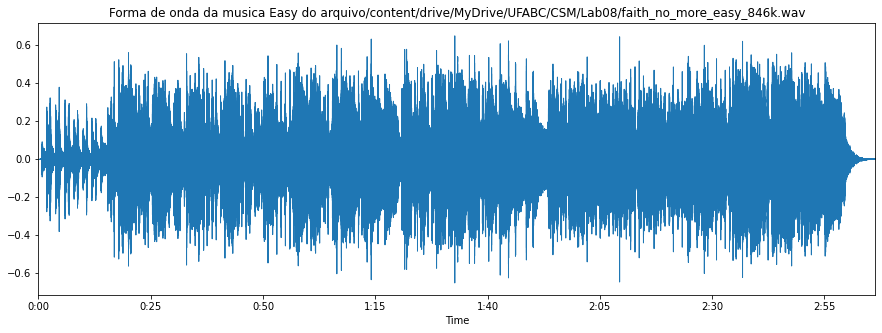
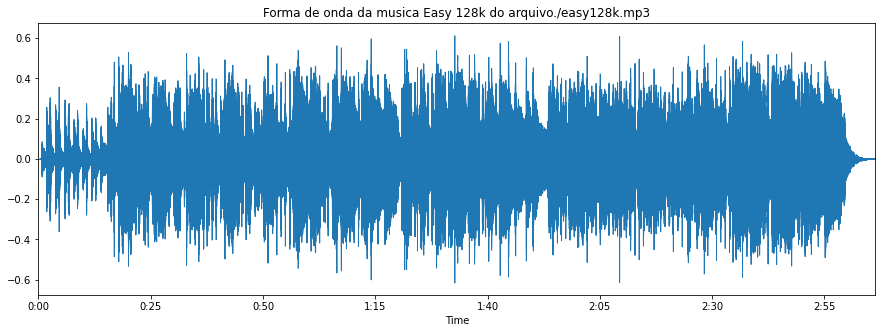

Áudio original (.wav)
O áudio analisado refere-se à música de nome Easy, da banda estadunidense Faith No More.

Conversão wav em mp3, 128kbps, taxa fixa

Conversão wav em mp3, 64kbps, taxa fixa

Conversão wav em mp3, N=0, taxa variável (150.9 kbps)

Conversão wav em mp3, N=5, taxa variável (78.3 kbps)

Conversão wav em mp3, N=9, taxa variável (50.3 kbps)

Modificação do tempo
easy0.mp3 - 1x


easy0.mp3 - 2x